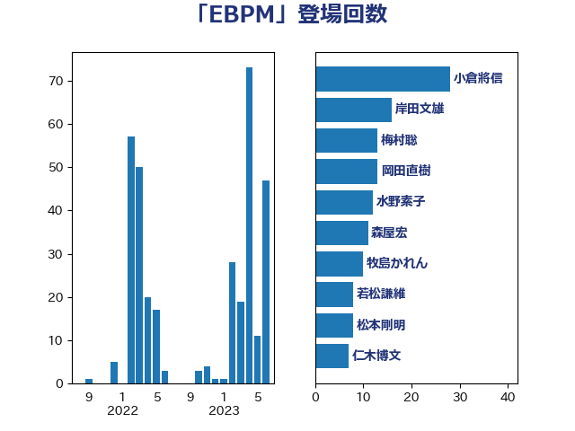

単語「EBPM」

| 小倉將信 | 自由民主党 | 28 回 |
| 岸田文雄 | 自由民主党 | 16 回 |
| 梅村聡 | 日本維新の会 | 13 回 |
| 岡田直樹 | 自由民主党 | 13 回 |
| 水野素子 | 立憲民主党 | 12 回 |
| 森屋宏 | 自由民主党 | 11 回 |
| 牧島かれん | 自由民主党 | 10 回 |
| 若松謙維 | 公明党 | 8 回 |
| 松本剛明 | 自由民主党 | 8 回 |
| 仁木博文 | 無所属 | 7 回 |
| 階猛 | 立憲民主党 | 5 回 |
| 鈴木俊一 | 自由民主党 | 5 回 |
| 野田聖子 | 自由民主党 | 5 回 |
| 田名部匡代 | 立憲民主党 | 5 回 |
| 太栄志 | 立憲民主党 | 5 回 |
| 梅村みずほ | 日本維新の会 | 4 回 |
| 吉川沙織 | 立憲民主党 | 4 回 |
| 中川宏昌 | 公明党 | 4 回 |
| 金子恭之 | 自由民主党 | 3 回 |
| 清水貴之 | 日本維新の会 | 3 回 |
| 音喜多駿 | 日本維新の会 | 2 回 |
| 阿部司 | 日本維新の会 | 2 回 |
| 足立康史 | 日本維新の会 | 2 回 |
| 藤井一博 | 自由民主党 | 2 回 |
| 萩生田光一 | 自由民主党 | 2 回 |
| 竹内真二 | 公明党 | 2 回 |
| 福島伸享 | 無所属 | 2 回 |
| 田村智子 | 日本共産党 | 2 回 |
| 河西宏一 | 公明党 | 2 回 |
| 山下雄平 | 自由民主党 | 2 回 |
| 尾身朝子 | 自由民主党 | 2 回 |
| 小森卓郎 | 自由民主党 | 2 回 |
| 小林史明 | 自由民主党 | 2 回 |
| 室井邦彦 | 日本維新の会 | 2 回 |
| 和田義明 | 自由民主党 | 2 回 |
| 北神圭朗 | 無所属 | 2 回 |
| 前原誠司 | 国民民主党 | 2 回 |
| 上田清司 | 国民民主党 | 2 回 |
| 三谷英弘 | 自由民主党 | 2 回 |
| 青木愛 | 立憲民主党 | 1 回 |
| 長浜博行 | 無所属 | 1 回 |
| 金子道仁 | 日本維新の会 | 1 回 |
| 近藤和也 | 立憲民主党 | 1 回 |
| 輿水恵一 | 公明党 | 1 回 |
| 紙智子 | 日本共産党 | 1 回 |
| 秋野公造 | 公明党 | 1 回 |
| 石垣のりこ | 立憲民主党 | 1 回 |
| 矢倉克夫 | 公明党 | 1 回 |
| 田村貴昭 | 日本共産党 | 1 回 |
| 田中健 | 国民民主党 | 1 回 |
| 熊谷裕人 | 立憲民主党 | 1 回 |
| 浦野靖人 | 日本維新の会 | 1 回 |
| 浅野哲 | 国民民主党 | 1 回 |
| 浅田均 | 日本維新の会 | 1 回 |
| 河野太郎 | 自由民主党 | 1 回 |
| 柴田巧 | 日本維新の会 | 1 回 |
| 柘植芳文 | 自由民主党 | 1 回 |
| 有村治子 | 自由民主党 | 1 回 |
| 新妻秀規 | 公明党 | 1 回 |
| 平沼正二郎 | 自由民主党 | 1 回 |
| 山田太郎 | 自由民主党 | 1 回 |
| 小沢雅仁 | 立憲民主党 | 1 回 |
| 大串正樹 | 自由民主党 | 1 回 |
| 堀井巌 | 自由民主党 | 1 回 |
| 国光あやの | 自由民主党 | 1 回 |
| 嘉田由紀子 | 無所属 | 1 回 |
| 加藤勝信 | 自由民主党 | 1 回 |
| 加田裕之 | 自由民主党 | 1 回 |
| 佐藤啓 | 自由民主党 | 1 回 |
| 伊波洋一 | 無所属 | 1 回 |
| 井坂信彦 | 立憲民主党 | 1 回 |
| 中谷一馬 | 立憲民主党 | 1 回 |
| 中山展宏 | 自由民主党 | 1 回 |